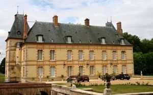
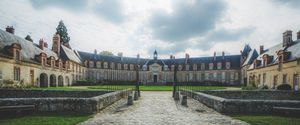
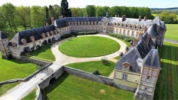
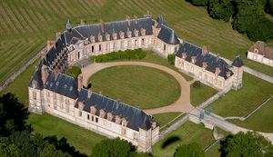
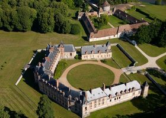
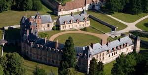
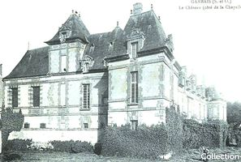
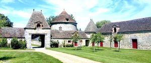

Recensement Jean-Claude Truffet
| Département | 78 — Yvelines |
| Canton | Aubergenville |
| Commune | Gambais |
| Type d'édifice | Château |
| Période d'origine | XVI-XVII |








Deux châteaux dans cet article Neuville et Bourdonné NEUVILLE, château construit entre 1560 et 1580, achevé après 1582. Peu modifié jusqu'aux années 1750-1760 où il est mis au goût classique avec un corps central à fronton et deux ailes symétriques. Vendu comme bien national en 1793, et racheté en 1800 par la même famille. Peu de modifications au XIXe siècle, campagnes de restauration depuis 1972. Construction de l'édifice en 1560 pour Joachim de Bellengreville, grand Prévot de l'hotel du Roy Henri IV. On attribue le château à Androuet du Cerceau, célèbre architecte français. En 1690, acquisition du château par François de Nyert, premier valet de chambre de Louis XIV, et gouverneur du Louvre. En 1750, Agnès de Revol, fille de M. de Nyert, modifie l'aspect extérieur du château, en lui conférant sa forme actuelle. En 1765, acquisition par Clément de Laverdy, conseiller au parlement de Paris, contrôleur général des Finances de Louis XV. Pendant la Révolution, M. de Laverdy, âgé de 70 ans et retiré de toute fonction politique est arrêté, guillotiné et le château est pillé. En 1795, le marquis de Labriffe, gendre de M. de Laverdy, ancêtre des propriétaires actuels achète le château. Au XIXe siècle, il est habité par la famille de Labriffe. Au XXe siècle la maison est occupée par les armées en campagne durant les deux guerres mondiales puis laissée à l'abandon, c'est en 1960 que la famille entreprend une très longue restauration qui se poursuit aujourd'hui.
NEUVILLE; les toitures à la francçaises forment le principal attrait de ce château construit aux XVIe et XVIIe siècle et décoré au XVIIIe siècle. S'élevant au bout d'une belle avenue, Neuville possèdent autant de portes et de fenêtres qu'ils y a de jours dans l'année. Il est restauré avec beaucoup de gout par un amateur américain monsieur Stacey . Éléments protégés MH : les façades et les toitures du château et des communs ; la rampe en fer forgé de l'escalier et les pièces suivantes du château avec leur décor : la salle à manger d'été, le salon d'été, la chapelle, la salle dite des gardes, la pièce dite billard, le salon d'hiver, la salle à manger d'hiver, le petit salon d'hiver : classement par arrêté du 17 juillet 1972. Le domaine clos de murs, en totalité : inscription par arrêté du 31 juillet 1995. BOURDONNE, à trois K.M.au sud, demeure seigneuriale de style Louis XIII qui mire ses murs roses dans londe calme des étangs. Le château a été bâti au XVIIe siècle pour Charles Ier de Cocherel, conseiller du roi et bailli de Montfort l'Amaury. Edifice de brique et de pierre surmonté d'une haute toiture d'ardoises, il fut restauré au XIXe siècle. José-Maria de Hérédia sinstalla au château vers 1901 où il était lhôte des propriétaires M. et Mme Georges Itasse qui lentouraient dune amitié intelligente et profonde, il devait y passer les dernières semaines de sa vie. Éléments protégés MH : le corps de logis flanqué de deux pavillons en saillie, les communs, les douves, le parc de 14 ha arboré, les boiseries de chêne, la chapelle reconstruite en 1733, la grille et le mur de clôture et les fontaines de pierre : inscription par arrêté du 27 février 1989.
Neuville; Clément de Laverdy Bourdonné ;Charles Ier de Cocherel"
Deux châteaux dans cet article Neuville grav 2 à 6 et Bourdonné grav-1